Symbolic Arithmetic and Functions |
When you evaluate arithmetic expressions or functions symbolically, Mathcad returns the results in terms of the symbols or variables in the original expression or function. The following sections describe symbolic arithmetic and functions:
| Symbolic Arithmetic |
If an arithmetic expression does not contain any decimal numbers, the symbolic equal sign returns results in symbolic form. For example, Mathcad returns the sum of common fractions as a fraction.
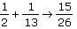
However, if the expression does contain a decimal number, Mathcad returns a decimal answer.
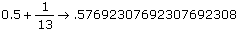
Mathcad calculates this result using symbolic floating-point evaluation, which returns results of variable precision.
Mathcad evaluates radical expressions by extracting roots as far as possible. If the result is not a rational number, Mathcad returns the answer in terms of the radical sign.
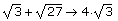
You can use the functions numer and denom to return the numerator or denominator of a symbolic fraction. For example,
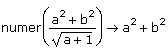
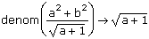
| Evaluating Functions Symbolically |
When you evaluate a function using the symbolic equal sign, Mathcad substitutes the argument into the function and evaluates it symbolically. For example,
f(x):= x3
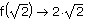
The argument of the function can be a symbolic expression.
f(sin(x)) → sin(x)3
You can also symbolically evaluate the standard Mathcad operators and many built-in functions, including most common numerical functions such as sin(x) and ex. See Limit Operators and Derivatives and Integrals for examples.
To apply a function to a vector and evaluate the function symbolically, use the vectorize operator. For example, to compute the cosine of each entry of the following vector,
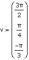
type cos(v) and press [Ctrl] [-] to insert the vectorize operator. Then press [Enter].
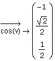
| Comparing Symbolic Results with Results From the Equals Sign |
Evaluating an expression symbolically can be more accurate than evaluating the same expression with the equals sign. The following example illustrates the difference:
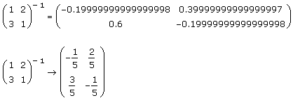
The first result, which is evaluated with the equal sign, is a numerical approximation of the inverse of the matrix. The second, which is evaluated with the symbolic equal sign, is exact. While the difference in this case is insignificant, in other problems, symbolic results can be substantially more accurate than results evaluated with the equal sign.
| Combining Symbolic and Numeric Calculations |
You can evaluate most symbolic results numerically by inserting the numerical equal sign after the symbolic result.
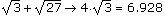
Note: A few symbolic results contain special symbolic functions or constants that cannot be evaluated with the numerical equal sign. You can evaluate these functions numerically using symbolic floating-point evaluation.
You can define a variable or function using the output of a symbolic calculation. For example, to define a function by the following calculation,
x2 + 3x + 2x2 + 5x → 3·x2 + 8·x
do the following steps:
f(x):= x2 + 3x + 2x2 + 5x → 3·x2 + 8·x
You can then evaluate the function f(x) as usual.
f(x) → 3·x2 + 8·x
f(2) = 28
You can also define a variable using a result returned by the regular equal sign =. For example, suppose you want to define a variable by the following output of the function var, which computes the variance of a set of numbers:
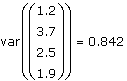
To do so, repeat steps 1 and 2 above. Then type a name for the variable in the placeholder that appears.
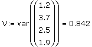
One advantage of defining the variable this way is that, although you cannot evaluate var symbolically, you can evaluate V symbolically.
V → 0.84187500000000015